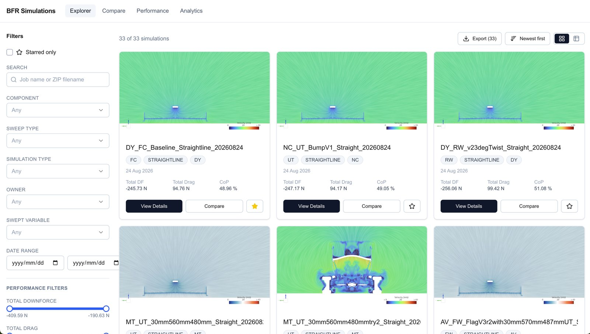
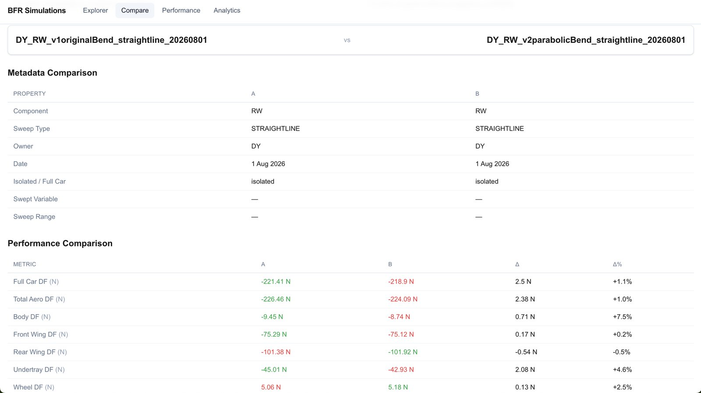
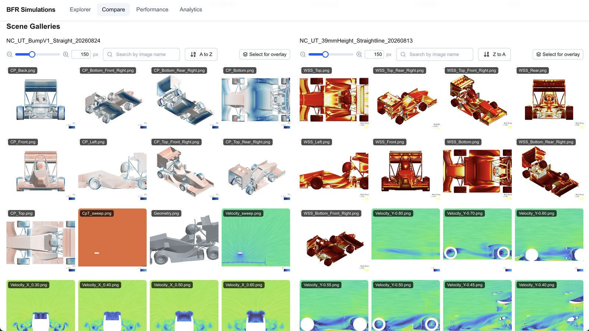
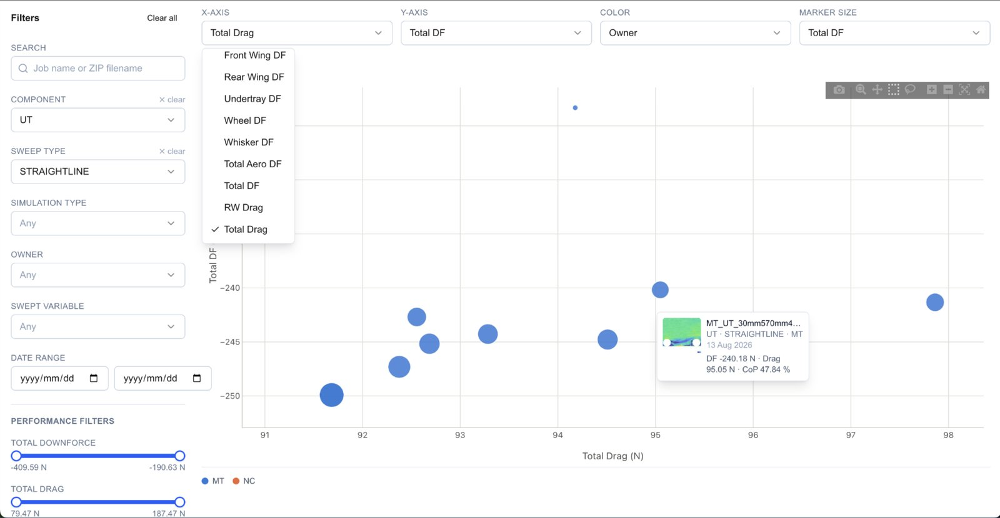
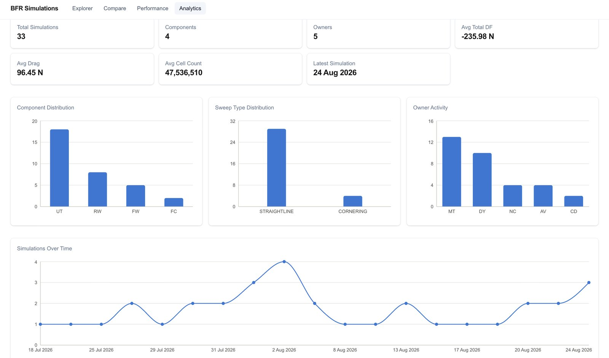
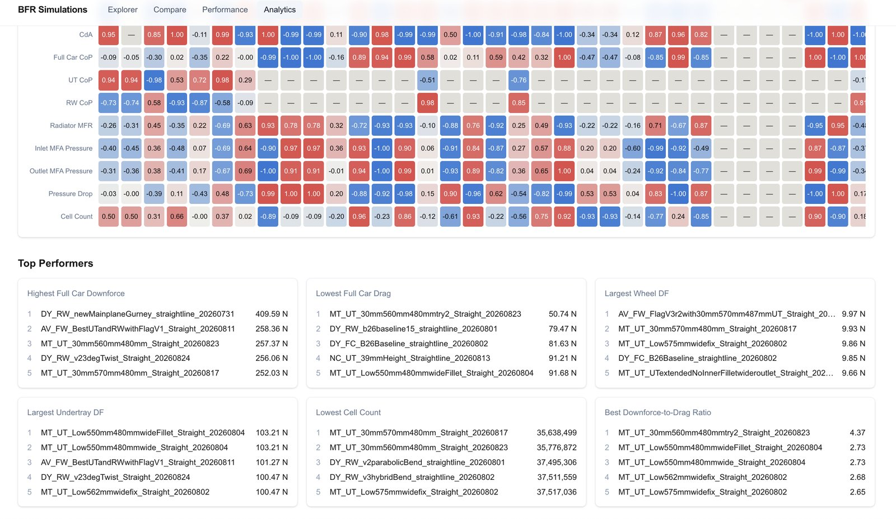

Berkeley Formula Racing's aero subteam was tracking CFD results across individual members' folders, with no shared naming, no way to compare runs, and no way to find a scene render without asking around. This is the tool that replaced that.
What it replaced: digging through individual Drive folders to find a specific run, with no consistent naming to search by.
Every simulation lands here automatically once it's uploaded. Component, sweep type, owner, and performance metrics are extracted and filterable, with the scene render shown up front so teammates recognize a run at a glance.

What it replaced: opening two separate result files and manually cross-referencing numbers.
Metadata and every performance metric are laid out delta-first, so green/red coloring shows which run won on each axis without doing the subtraction yourself. Scene galleries for both runs sit underneath, with an overlay tool for direct visual comparison.


Added after direct teammate feedback: "I want to see exactly what changed between these two scenes, not two images side by side."
Select a render from each run and the tool overlays them directly. This is what now gets pulled up live in design reviews instead of a folder of exported screenshots.
What it replaced: no way to see the whole design space at once, only one run at a time.
Any two metrics can be plotted against each other across every run in the dataset, colored by owner, sized by a third variable. This is where a downforce/drag trade-off across 10+ configurations actually becomes visible instead of implied.

What it replaced: no visibility into who was running what, or whether coverage across components was balanced.
A rolling view of team throughput: which components are getting the most simulation attention, who's contributing, and how activity trends across the season. Below that, a correlation matrix and auto-surfaced leaderboards (highest downforce, best drag ratio, lowest cell count) mean nobody has to sort a spreadsheet to find the best-performing geometry.

